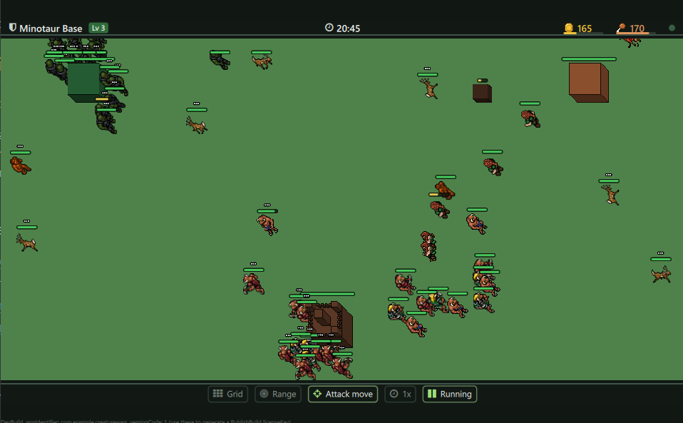

Creature Wars
A small real time strategy game made with Felgo 4 and Qt 6. Pick a race, grow your base, train an army and destroy the enemy bases before they destroy yours.

Three races fighting around their bases.
Made for the Felgo developer challenge: a complete game in one week plus a tutorial.
Tutorial
Start here. From installing Felgo to a finished match with AI opponents.
- Tutorial 1: What We Build
- Tutorial 2: Install Felgo and Run the Game
- Tutorial 3: The Felgo Project
- Tutorial 4: Scenes and the Game Window
- Tutorial 5: A Game Core Like an MMORPG Server
- Tutorial 6: Connecting the Core to QML
- Tutorial 7: The Map, Sprites and Oblique Projection
- Tutorial 8: Selecting Units and Giving Orders
- Tutorial 9: Economy, Bases and the Radial Menu
- Tutorial 10: AI Opponents and Wildlife
- Tutorial 11: Ending the Match
Developer Guide
For people who work on the project: build options, architecture, code rules and recipes for common changes.
Reference
Core Reference: the main classes of the C++ core and the Qt bridge.